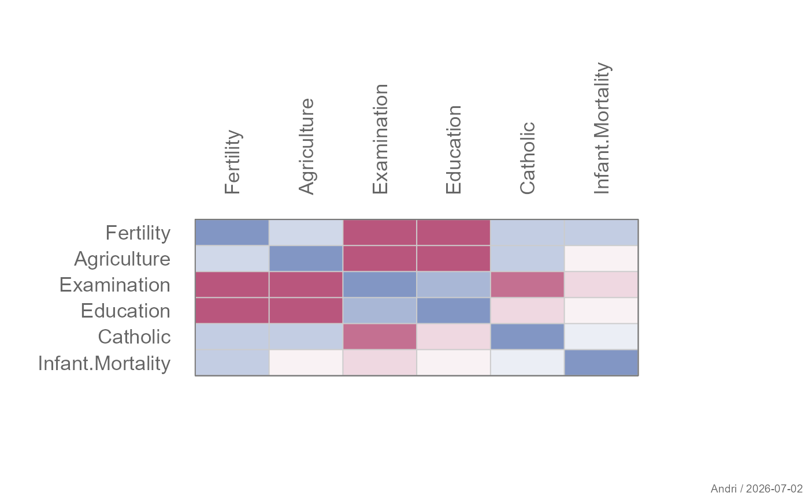
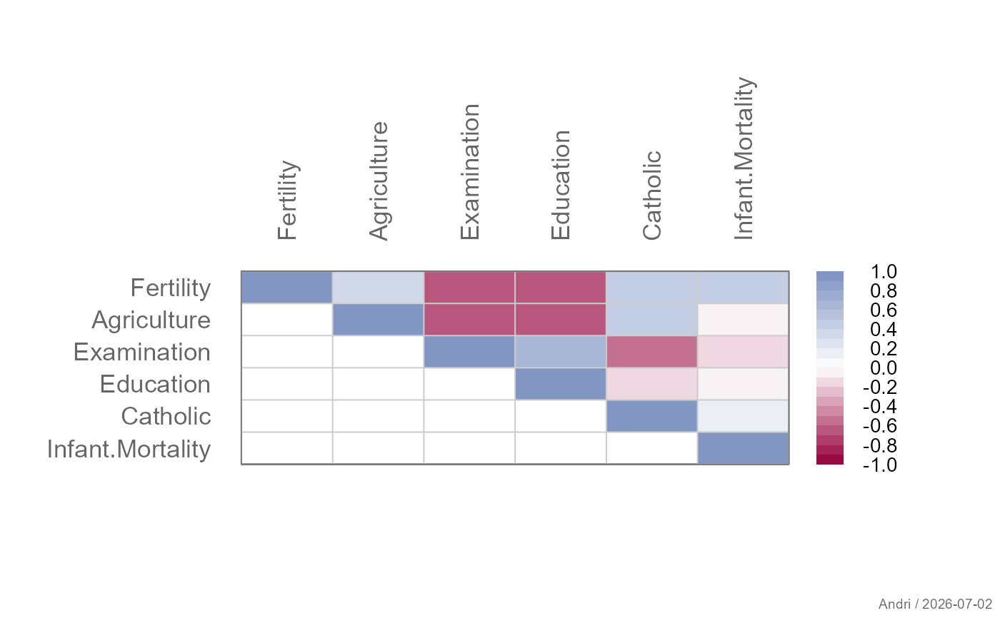
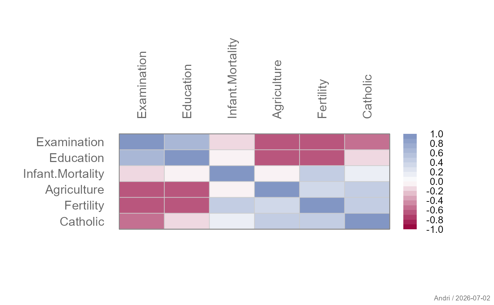
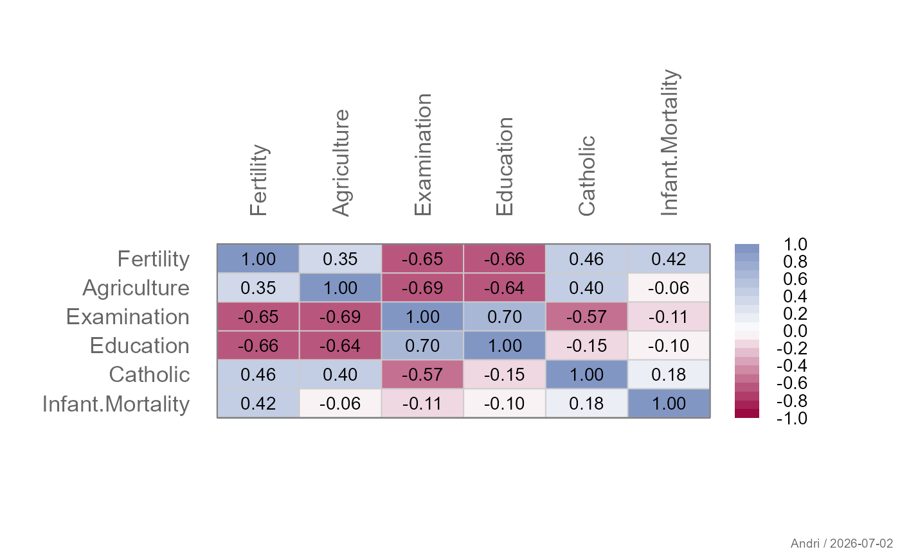
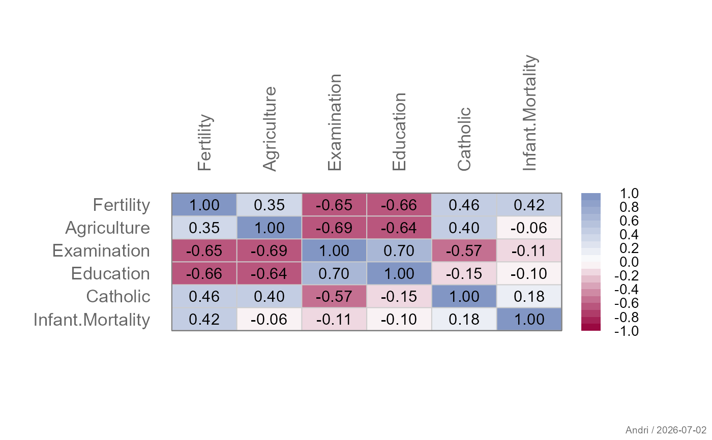
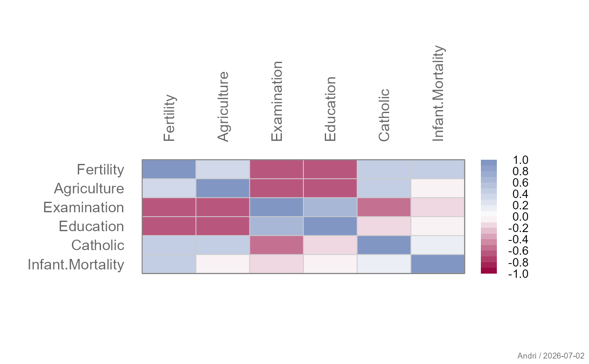
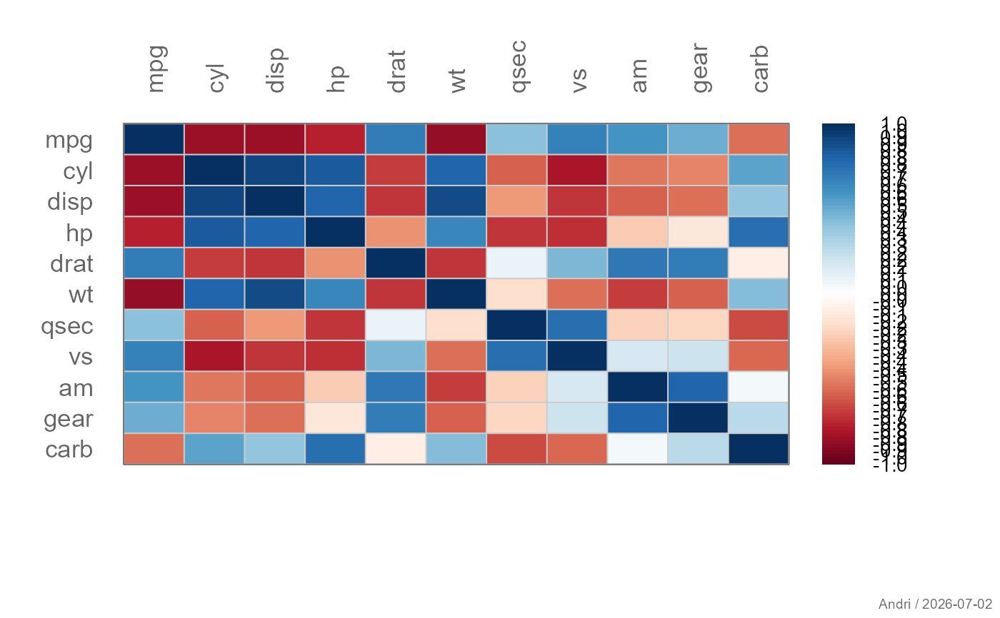
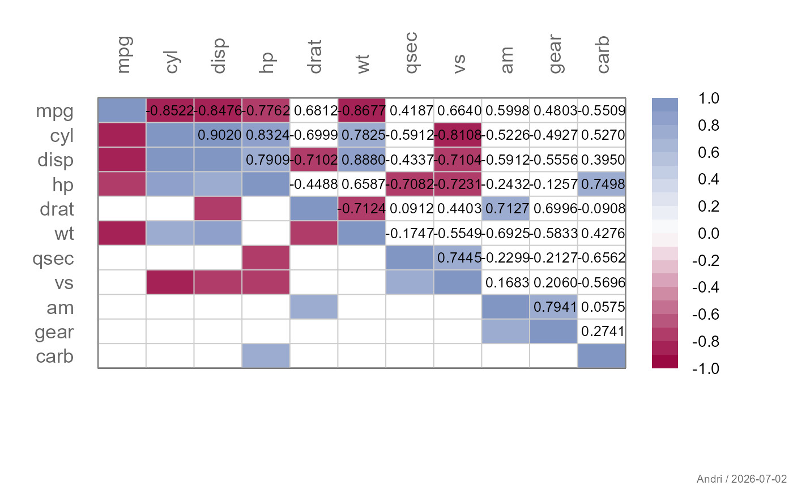
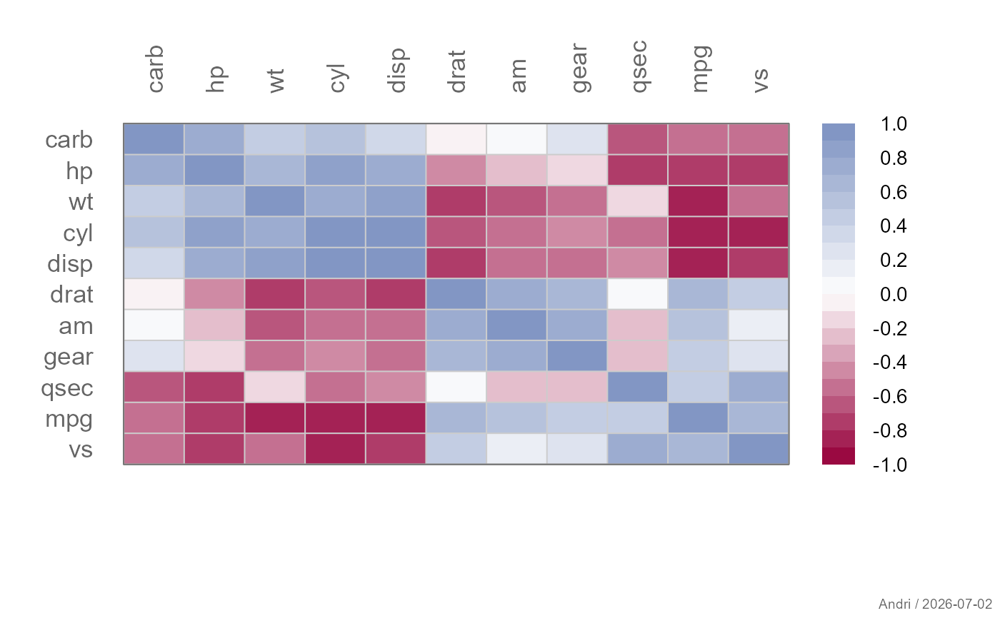
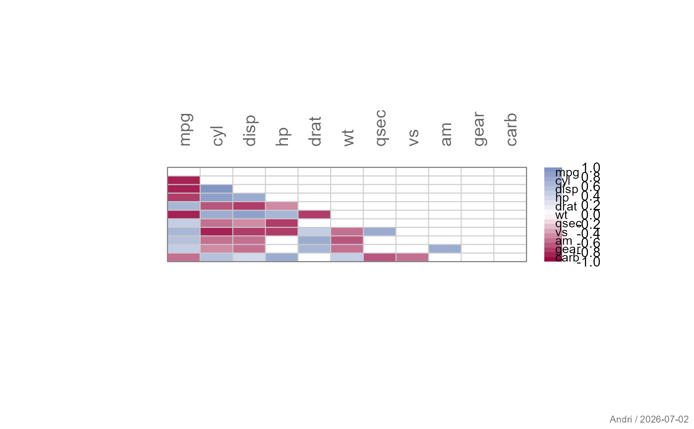

Draws a correlation matrix using image with
optional clustering, triangular display, grid lines, color legend,
and numeric labels inside the cells.
Usage
plotCor(
x,
main = NULL,
xlab = NULL,
ylab = NULL,
xax = TRUE,
yax = TRUE,
cluster = FALSE,
mincor = 0,
triangle = c("full", "upper", "lower"),
diag = TRUE,
col = .useTheme,
grid = .useTheme,
box = .useTheme,
legend = TRUE,
text = FALSE,
...
)Arguments
- x
A numeric correlation matrix.
- main, xlab, ylab
Optional plot labels.
- xax, yax
Controls drawing of the axes.
Supported values are
TRUEdraw axis using default settings
FALSEsuppress axis
list(...)custom axis parameters passed to
axis
- cluster
Logical; if
TRUE, variables are reordered by hierarchical clustering to place similar correlations together.- mincor
Numeric threshold; correlations with absolute value smaller than this are suppressed (set to
NA).- triangle
Which part of the matrix to display. One of
"full","upper", or"lower".- diag
Logical; should the diagonal be displayed.
- col
Color palette used for the correlation values.
.useTheme(default) builds a diverging ramp fromgetTheme()$twin- the active theme's two-color pair - through white:twin[1]at the negative end (\(-1\)), white at zero,twin[2]at the positive end (\(+1\)).- grid
Controls drawing of cell-separator grid lines at the half-integer matrix boundaries (clipped to the matrix extent, so they never bleed into the margins). Can be:
.useTheme(default): follow the active theme (getTheme()$grid$col/$lwd)TRUE: draw with theme settingsFALSE,NULL, orNA: suppressa named list: override
col/lwdfor this call only
- box
Controls drawing of the plot box.
.useTheme(default) resolves togetTheme()$box.TRUE/FALSE/NA, or a named list, as forgrid.- legend
Logical; draw a color legend for the correlation scale.
- text
Controls numeric labels drawn inside the matrix cells.
Supported values are
FALSEno labels
TRUEdefault labels based on the correlation values
list(...)custom parameters passed to the internal text drawing routine
- ...
Details
The function follows the DescToolsX plotting conventions:
User arguments override theme settings.
Theme settings override base graphics defaults.
Graphical parameters (e.g.
cex,las,mar) can be supplied via....
The function internally:
Optionally reorders the matrix using hierarchical clustering.
Masks parts of the matrix according to
triangleanddiag.Adjusts plot margins based on label sizes.
Draws the matrix using
image.Optionally adds grid lines, numeric labels, axes, and a color legend.
Grid lines are drawn via clipped abline() calls
at the matrix's half-integer cell boundaries rather than via
grid(): grid()'s nx/ny
divide the full plot region (par("usr")), which may carry axis
padding unrelated to image()'s integer cell geometry, whereas the
clipped approach stays exact regardless of that padding.
See also
Other plot.bivariate:
plotAssoc(),
plotBag(),
plotDens2D(),
plotHeatmap(),
plotHexbin(),
plotMosaic(),
plotXY()
Examples
m <- cor(swiss)
# full correlation matrix
plotCor(m, legend=FALSE)

# upper triangle only
plotCor(m, triangle = "upper")

# clustered variables
plotCor(m, cluster = TRUE)

# with correlation values
plotCor(m, text = TRUE)

# customized labels
plotCor(m,
text = list(col = "black", cex = 0.9))

# hide grid
plotCor(m, grid = FALSE)
plotCor(m, cols=colorRampPalette(c("red", "black", "green"), space = "rgb")(20))

plotCor(m, cols=colorRampPalette(c("red", "black", "green"), space = "rgb")(20),
args.colLegend=NA)
m <- cor(mtcars)
plotCor(m, col=pal("RedWhiteBlue1", 100), border="grey",
args.colLegend=list(labels=format(seq(-1,1,.25), digits=2), frame="grey"))

# display only correlation with a value > 0.7
plotCor(m, mincor = 0.7)
x <- matrix(rep(1:ncol(m),each=ncol(m)), ncol=ncol(m))
y <- matrix(rep(ncol(m):1,ncol(m)), ncol=ncol(m))
txt <- format(m, digits=3)
idx <- upper.tri(matrix(x, ncol=ncol(m)), diag=FALSE)
# place the text on the upper triagonal matrix
text(x=x[idx], y=y[idx], label=txt[idx], cex=0.8, xpd=TRUE)

# put similiar correlations together
plotCor(m, clust=TRUE)

# same as
idx <- order.dendrogram(as.dendrogram(
hclust(dist(m), method = "mcquitty")
))
plotCor(m[idx, idx])
# plot only upper triangular matrix and move legend to bottom
m <- cor(mtcars)
m[lower.tri(m, diag=TRUE)] <- NA
# get the p-values
p <- outer(
(vars <- colnames(mtcars)), vars,
Vectorize(function(v1, v2)
cor.test(mtcars[[v1]], mtcars[[v2]], method = "pearson")$p.value
)
)
dimnames(p) <- list(vars, vars)
m[p > 0.05] <- NA
plotCor(m, mar=c(8,8,8,8), yaxt="n",
args.colLegend = list(x="bottom", inset=-.15, horiz=TRUE,
height=abs(lineToUser(line = 2.5, side = 1)),
width=ncol(m)))
mtext(text = rev(rownames(m)), side = 4, at=1:ncol(m), las=1, line = -5, cex=0.8)
